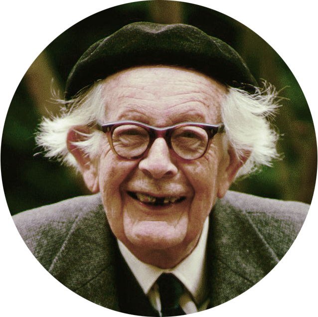

Jean Piaget
Jean Piaget (1896 - 1980) was employed at the Binet Institute in the 1920s, where his job was to develop French versions of questions on English intelligence tests.
He became intrigued with the reasons children gave for their wrong answers on the questions that required logical thinking. He believed that these incorrect answers revealed important differences between the thinking of adults and children.
Piaget (1936) was the first psychologist to make a systematic study of cognitive development. His contributions include a theory of cognitive child development, detailed observational studies of cognition in children, and a series of simple but ingenious tests to reveal different cognitive abilities.
Before Piaget’s work, the common assumption in psychology was that children are merely less competent thinkers than adults. Piaget showed that young children think in strikingly different ways compared to adults.
According to Piaget, children are born with a very basic mental structure (genetically inherited and evolved) on which all subsequent learning and knowledge is based.